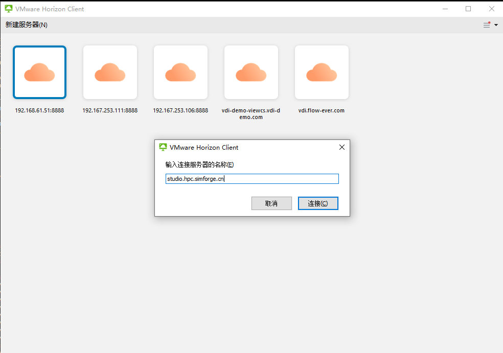
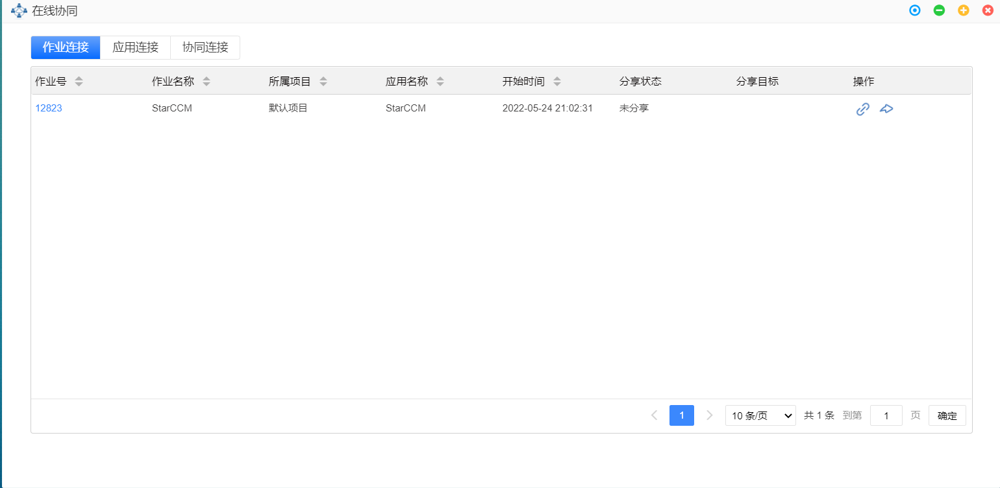
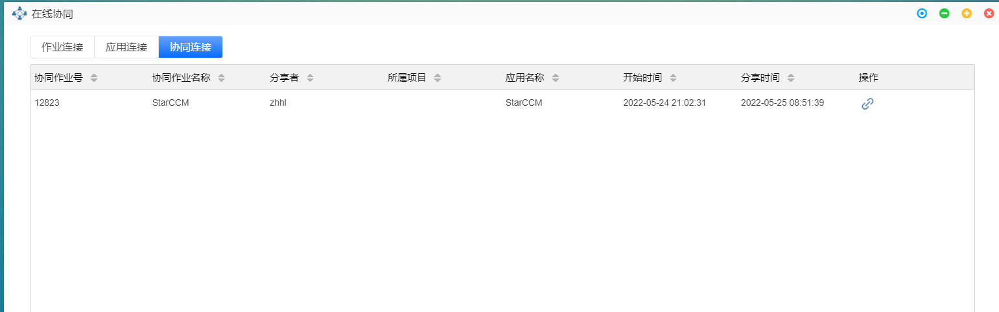
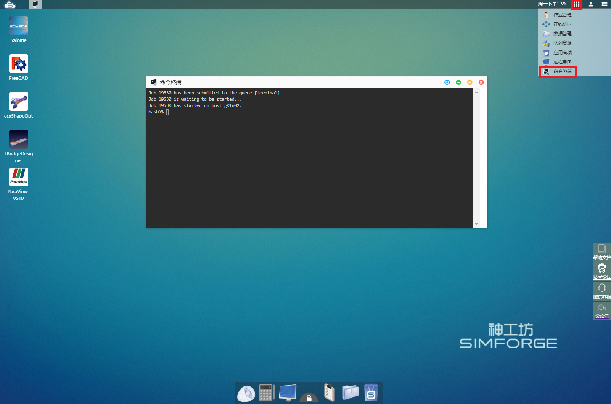
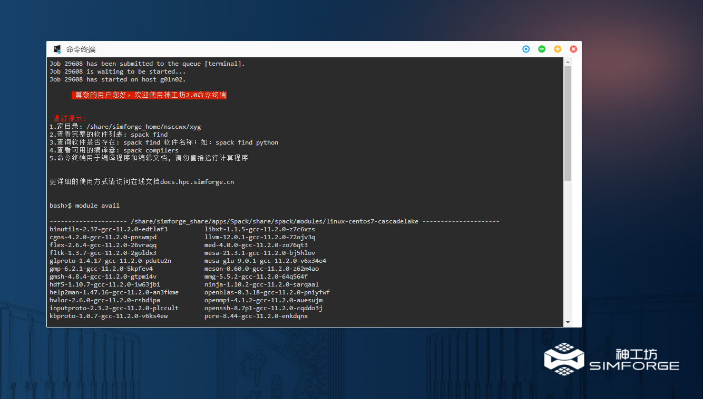
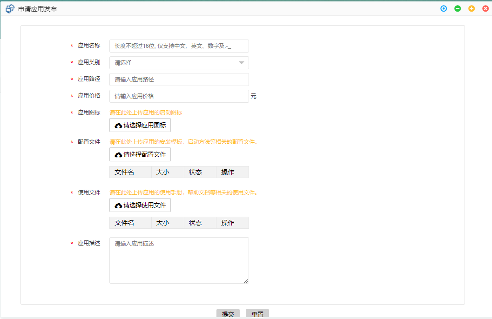
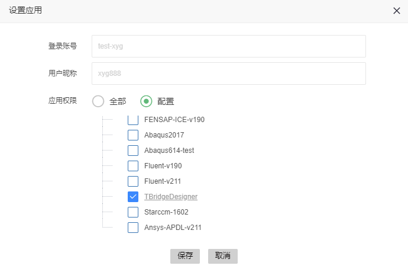
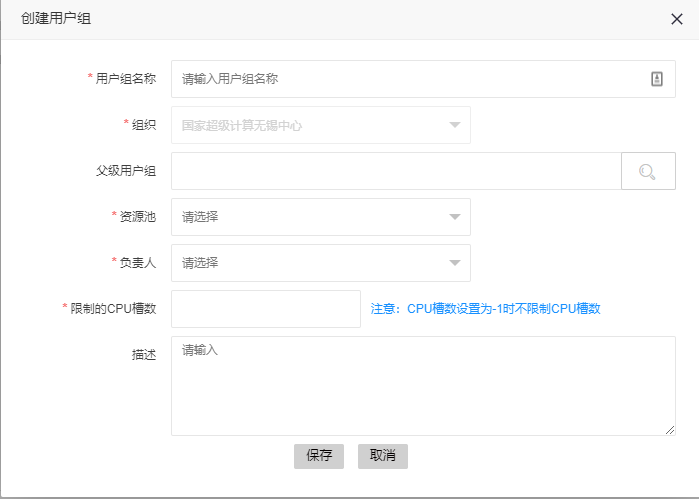
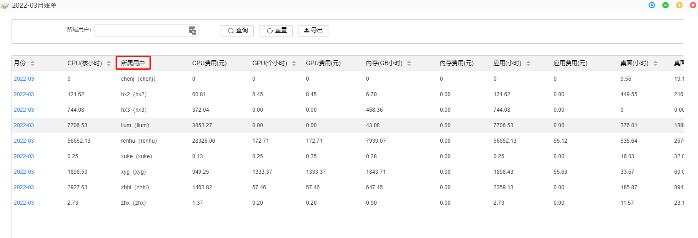

第4章 特色功能
远程桌面

远程桌面提供给用户一个具备图形界面的Linux虚拟机，图形应用通过GPU渲染后会显示在远程桌面中。用户还可以在远程桌面中通过命令行执行相关命令，如程序编译、运行、脚本执行等，目的是提供更方便、更灵活、更高效的集群使用方式。远程桌面挂载了用户的存储空间，可直接通过命令行访问存储目录。
远程桌面适用于以下场景
- 大规模仿真前后处理，需要流畅、清晰图形显示和操作
- 需要自行编写脚本实现作业批量提交运行
- 自研程序需要在线编译，并运行在神工坊集群上
远程桌面开通
点击dock栏 进入远程桌面开通界面，选择规格，点击开通。
进入远程桌面开通界面，选择规格，点击开通。

远程桌面退订
点击topbar功能管理按钮，下拉框选择远程桌面*， 弹窗中显示已开通的远程桌面规格

连接： 进入远程桌面
退订： 退订远程桌面
 注意：退订后远程桌面内运行的作业，进程将全部结束，请谨慎操作！
注意：退订后远程桌面内运行的作业，进程将全部结束，请谨慎操作！
远程桌面使用
基本使用
进入远程桌面：
方法一： 单击dock栏远程桌面图标，进入已开通的远程桌面
方法二： 单击topbar功能管理图标，下拉框选择远程桌面， 弹窗中选择连接按钮，进入已开通远程桌面
远程桌面是一个带有图形界面的Linux虚拟机，基本使用同linux发行版 Centos或者Ubuntu一致，详细请参考相关使用教程。
递交作业
查看队列资源
aip queue info

csub任务提交命令
通用作业提交，调度器自动分配节点
csub -I -q q_x86_sf -n 8 -o %J.out -e %J.error <command> # 交互提交
csub -q q_x86_sf -n 8 -o %J.out -e %J.error <command> # 后台提交
跨节点作业提交，指定每节点核数
csub -I -q q_x86_sf -n 64 -R span[ptile=32] -o %J.out -e %J.error <command>
更多命令参数请查看csub文档：
man csub
递交MPI作业
-
基于MPICH的MPI实现 包括Intel MPI、MPICH、MVAPICH
spack load mpich@3.4.2%gcc@4.8.5 # 加载mpich-3.4.2 module load Intel/parallel_studio_xe_2018/2018 # 加载Intel2018程序包 csub -n 64 -q q_x86_sf mpirun ./myprogram -
基于OpenMPI的MPI实现 包括OpenMPI、Platform/HP/IBM MPI
spack load openmpi@4.1.2%gcc@4.8.5 # 加载openmpi-4.1.2 csub -n 64 -q q_x86_sf ompi-mpirun ./myprogram
客户端模式使用远程桌面
远程桌面可以通过客户端模式访问，基于客户端，能够给用户提供更加流畅、清晰的图形操作体验。
客户端连接前，请先在平台开通远程桌面
客户端下载
用户可以通过以下网站，选择相应版本，下载客户端：
下载后进行安装
客户端设置 用户启动客户端后，首先进行客户端的设置，点击右上角下拉框，选择配置SSL，弹窗中选择不验证服务器身份证书，确定

VDI连接 单击新建服务器，弹窗里输入VDI服务器地址：studio.hpc.simforge.cn

单击连接,随后弹窗中输入平台账号密码:

登录后即可看到在平台开通的VDI，点击进入远程桌面
编译程序
加载相关库
- 查看已安装的包
spack find # 查看已安装的包 ==> 74 installed packages -- linux-centos7-cascadelake / gcc@10.2.0 ----------------------- autoconf@2.69 libbsd@0.11.3 perl@5.34.0 autoconf-archive@2019.01.06 libffi@3.3 pkgconf@1.8.0 automake@1.16.3 libiconv@1.16 python@3.9.9 berkeley-db@18.1.40 libmd@1.0.3 readline@8.1 bzip2@1.0.8 libsigsegv@2.13 sqlite@3.36.0 cmake@3.22.1 libtool@2.4.6 tar@1.34 diffutils@3.8 libxml2@2.9.12 texinfo@6.5 expat@2.4.1 m4@1.4.19 util-linux-uuid@2.36.2 gcc@10.2.0 mpc@1.1.0 xz@5.2.5 gdbm@1.19 mpfr@4.1.0 zlib@1.2.11 gettext@0.21 ncurses@6.2 zstd@1.5.0 gmp@6.2.1 openssl@1.1.1l -- linux-centos7-haswell / gcc@4.8.5 ---------------------------- autoconf@2.69 libevent@2.1.12 openmpi@4.1.2 automake@1.16.3 libfabric@1.14.0 openssh@8.7p1 berkeley-db@18.1.40 libffi@3.3 openssl@1.1.1l bzip2@1.0.8 libiconv@1.16 perl@5.34.0 cmake@3.22.1 libmd@1.0.3 pkgconf@1.8.0 diffutils@3.8 libpciaccess@0.16 python@3.9.9 expat@2.4.1 libsigsegv@2.13 readline@8.1 findutils@4.8.0 libtool@2.4.6 sqlite@3.36.0 gdbm@1.19 libxml2@2.9.12 tar@1.34 gettext@0.21 m4@1.4.19 util-linux-uuid@2.36.2 hwloc@2.6.0 mpich@3.4.2 util-macros@1.19.3 libbsd@0.11.3 ncurses@6.2 xz@5.2.5 libedit@3.1-20210216 numactl@2.0.14 zlib@1.2.11 - 加载编译器
spack load gcc@10.2.0 # 加载10.2.0版本gcc编译器 - 多个版本库的加载
spack load cmake # 加载cmake提示有多个版本的包 ==> Error: cmake matches multiple packages. Matching packages: qapiaa2 cmake@3.22.1%gcc@4.8.5 arch=linux-centos7-haswell 7latf3f cmake@3.22.1%gcc@10.2.0 arch=linux-centos7-cascadelake Use a more specific spec. spack load cmake@3.22.1%gcc@10.2.0 # 加载gcc-10.2.0编译的版本
共享空间
对于企业用户，同一组织的成员能够创建共享空间分享文件给其他人。文件的权限可以灵活设置。
共享空间创建
- 在数据管理
 窗口中点击 共享空间，展开的树形结构中单击 新增
窗口中点击 共享空间，展开的树形结构中单击 新增 - 弹出共享空间设置窗口，填写相关参数
共享组名称： 只支持字母、数字和下划线
组织成员： 弹窗左侧树形结构显示组织成员，勾选确定共享组成员
共享组权限： 弹窗右侧上部，设置共享组权限，只读 表示被共享成员只能查看下载共享数据；可写，表示被共享成员可以上传数据至共享空间。
共享组成员： 弹窗右侧线框内显示勾选的共享组成员
- 提交按钮，创建共享组；取消按钮，取消本次创建


共享空间删除
右击 已创建的共享空间，单击删除共享空间，弹窗选择 确定

注意： 只有共享组创建者才可以删除共享组，被共享成员无法删除共享组。如上图，上面两个橙色共享组（test、aaa）是该用户创建，下面两个绿色共享组（1、test0520）是其他成员创建。
在线协同
在线协同主要用于组织内部成员之间进行图形界面的共享，实现在线协同仿真工作，启动方式如下：
单击topbar 功能管理按钮，下拉框单击在线协同按钮，进入在线协同设置页面
界面导航
在线协同页面有三个子页面，分别为作业管理，应用管理和协同管理
作业连接子页面显示的是以VNC方式运行仿真计算应用作业
应用连接子页面显示的是以VNC方式启动的图形应用作业
协同管理子页面显示的是被分享的图形界面作业

在作业连接、应用连接页面，显示相关作业列表，每个作业会有作业号、作业名称、所属项目、应用名称、开始时间、分享状态、分享目标、操作属性栏
分享状态： 显示作业是否被分享
分享目标： 显示作业分享的账号
操作： 操作栏显示分享相关的操作
界面共享
作业未被共享时，操作栏有两个按钮连接和分享
 连接： 点击进入作业图形界面
连接： 点击进入作业图形界面
 分享： 点击弹出图形界面分享设置界面，界面如下所示：
分享： 点击弹出图形界面分享设置界面，界面如下所示：

权限： 勾选被共享者之前可以设置共享权限，观察表示被共享者只能浏览被共享页面，互动表示被共享者可以操作被共享的页面
左侧设置框内 勾选想要分享的组织成员，勾选后在右侧显示被分享者及分享权限
共享成功后，作业状态变为分享中，操作栏新增按钮断开 ，单击断开按钮，弹窗选择确定后可以结束共享

协同管理
协同管理页面显示的是被共享的作业列表，每个作业具有协同作业号、协同作业名称、分享者、所属项目、应用名称、开始时间、分享时间、操作属性栏
被分享作业，操作栏会有连接按钮，单击可进入被共享的界面

命令终端
命令终端是一个命令行程序，使用linux命令进行操作，可以看做是个网页版的远程终端。熟悉命令行的用户，可以使用命令终端功能来操作文件、提交作业等。
基本操作
在功能管理中选择命令终端，点击后打开命令终端界面。

打开后可进行命令行操作。如输入ls，可以查看用户文件夹中包含的文件。

用户完成命令行操作后，点击命令终端窗口右上角 即可退出命令终端。
即可退出命令终端。

加载编译器和库
spack 方式
- 查看已安装的包
spack find # 查看已安装的包
==> 74 installed packages
-- linux-centos7-cascadelake / gcc@10.2.0 -----------------------
autoconf@2.69 libbsd@0.11.3 perl@5.34.0
autoconf-archive@2019.01.06 libffi@3.3 pkgconf@1.8.0
automake@1.16.3 libiconv@1.16 python@3.9.9
berkeley-db@18.1.40 libmd@1.0.3 readline@8.1
bzip2@1.0.8 libsigsegv@2.13 sqlite@3.36.0
cmake@3.22.1 libtool@2.4.6 tar@1.34
diffutils@3.8 libxml2@2.9.12 texinfo@6.5
expat@2.4.1 m4@1.4.19 util-linux-uuid@2.36.2
gcc@10.2.0 mpc@1.1.0 xz@5.2.5
gdbm@1.19 mpfr@4.1.0 zlib@1.2.11
gettext@0.21 ncurses@6.2 zstd@1.5.0
gmp@6.2.1 openssl@1.1.1l
-- linux-centos7-haswell / gcc@4.8.5 ----------------------------
autoconf@2.69 libevent@2.1.12 openmpi@4.1.2
automake@1.16.3 libfabric@1.14.0 openssh@8.7p1
berkeley-db@18.1.40 libffi@3.3 openssl@1.1.1l
bzip2@1.0.8 libiconv@1.16 perl@5.34.0
cmake@3.22.1 libmd@1.0.3 pkgconf@1.8.0
diffutils@3.8 libpciaccess@0.16 python@3.9.9
expat@2.4.1 libsigsegv@2.13 readline@8.1
findutils@4.8.0 libtool@2.4.6 sqlite@3.36.0
gdbm@1.19 libxml2@2.9.12 tar@1.34
gettext@0.21 m4@1.4.19 util-linux-uuid@2.36.2
hwloc@2.6.0 mpich@3.4.2 util-macros@1.19.3
libbsd@0.11.3 ncurses@6.2 xz@5.2.5
libedit@3.1-20210216 numactl@2.0.14 zlib@1.2.11
spack load gcc@10.2.0 # 加载10.2.0版本gcc编译器
spack load cmake # 加载cmake提示有多个版本的包
==> Error: cmake matches multiple packages.
Matching packages:
qapiaa2 cmake@3.22.1%gcc@4.8.5 arch=linux-centos7-haswell
7latf3f cmake@3.22.1%gcc@10.2.0 arch=linux-centos7-cascadelake
Use a more specific spec.
spack load cmake@3.22.1%gcc@10.2.0 # 加载gcc-10.2.0编译的版本
spack load /qapiaa2 # 根据唯一识别码加载编译器qapiaa2 cmake@3.22.1%gcc@4.8.5 arch=linux-centos7-haswell
module方式
-
查看已安装的库
module avail -
加载程序包
module load Intel/parallel_studio_xe_2018/2018 # 加载Intel2018程序包
递交作业
查看队列资源
aip queue info
csub任务提交命令
通用作业提交，调度器自动分配节点
csub -I -q q_x86_sf -n 8 -o %J.out -e %J.error <command> # 交互提交
csub -q q_x86_sf -n 8 -o %J.out -e %J.error <command> # 后台提交
跨节点作业提交，指定每节点核数
csub -I -q q_x86_sf -n 64 -R span[ptile=32] -o %J.out -e %J.error <command>
更多命令参数请查看csub文档：
man csub
递交MPI作业
-
基于MPICH的MPI实现 包括Intel MPI、MPICH、MVAPICH
spack load mpich@3.4.2%gcc@4.8.5 # 加载mpich-3.4.2 module load Intel/parallel_studio_xe_2018/2018 # 加载Intel2018程序包 csub -n 64 -q q_x86_sf mpirun ./myprogram -
基于OpenMPI的MPI实现 包括OpenMPI、Platform/HP/IBM MPI
spack load openmpi@4.1.2%gcc@4.8.5 # 加载openmpi-4.1.2 csub -n 64 -q q_x86_sf ompi-mpirun ./myprogram
私有应用
神工坊应用商城可以支持用户自研应用的入驻，通过平台私有应用发布功能进行个人应用的在线发布。
平台目前私有应用发布流程为：用户通过远程桌面虚拟机完成软件在线编译部署->在线提交发布申请->管理员审核->应用上线。
界面导航
单击topbar，个人信息按钮，下拉框选择私有应用，进入私有应用界面

私用应用界面顶栏有三个按钮，分别为：
{ref}申请应用发布： 提交应用发布申请
{ref}申请文档更新：对已发布的应用进行用户帮助文档的更新
{ref}申请应用下线：下线已发布的应用
顶栏下方显示了用户私有应用列表，列表有应用名称、应用类型、应用价格、应用状态、审核状态、审核者名称、应用发布时间、文档更新时间属性
申请应用发布
单击按钮，进入应用发布申请界面，填写相关参数后，点击提交完成发布申请：

发布申请参数说明：
应用名称： 发布应用的名称，长度不超过16位，仅支持中文、英文、数字和-符合；
应用类别： 可选择图形应用，或者仿真计算；
应用路径： 应用在平台的安装路径；
应用价格： 应用标准定价，单位为 元/核小时；
应用图标: 应用图标，白底为背景，建议图片长宽一致，否则会有变形情况
配置文件： 上传应用安装部署、启动等相关配置说明文件，供管理员进行应用集成
使用文件： 上传应用的用户手册、演示案例等用户帮助文档，方便其他用户快速上手使用
应用描述： 对应用的功能进行简述，方便其他用户快速了解选择
申请文档更新
单击按钮，进入文档更新申请页面，重新上传文档，单击更新按钮，申请提交:

组织管理
对于企业用户，在平台有多个用户，企业组织管理员可以对组织用户进行管理、查看组织总体账单等。
用户管理

创建用户
- 登录账号：登录平台的账号
- 用户昵称：可设置为姓名全拼
- 组织：当前组织
- 部门：选择所属部门

修改用户
除登录账户外一般均可修改
删除用户
 警告 删除用户会将用户的所有关联信息及个人目录都删除,请谨慎操作！
警告 删除用户会将用户的所有关联信息及个人目录都删除,请谨慎操作！
激活并设置角色
创建完成后的账号需激活并设置角色后才能正常使用。
角色分为： - 普通用户 - 组织管理员
禁用
禁止一个或多个账户的使用
设置应用
配置用户可以使用的应用，默认为空。

用户组管理

创建用户组
创建用户组使得组织管理员能够自由组合组织成员，实现多级管理。

修改用户组
修改已经创建的用户组，但只能修改组织名。
删除用户组
删除已经创建的用户组。
组员管理
给用户组配置组员

组织账单

- 重置：重置月份区间
- 导出：下载账单至本地，格式为*.xlsx
月份区间
选择列表显示的区间

月账单查看
点击左侧月份进入月账单查看。 - 所属用户：可根据用户筛选显示

